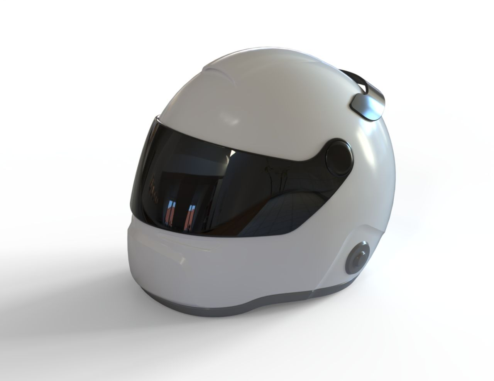
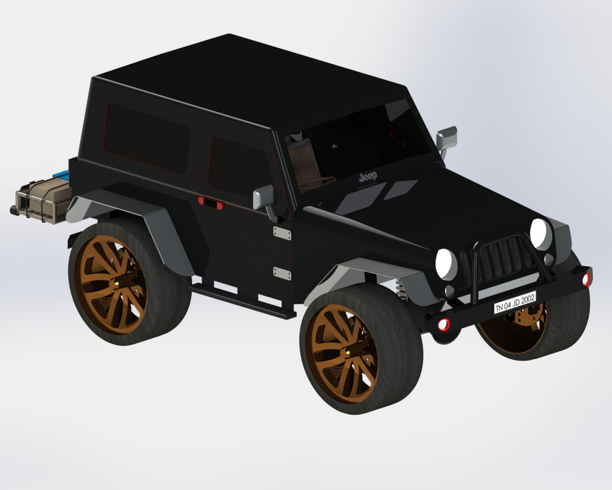
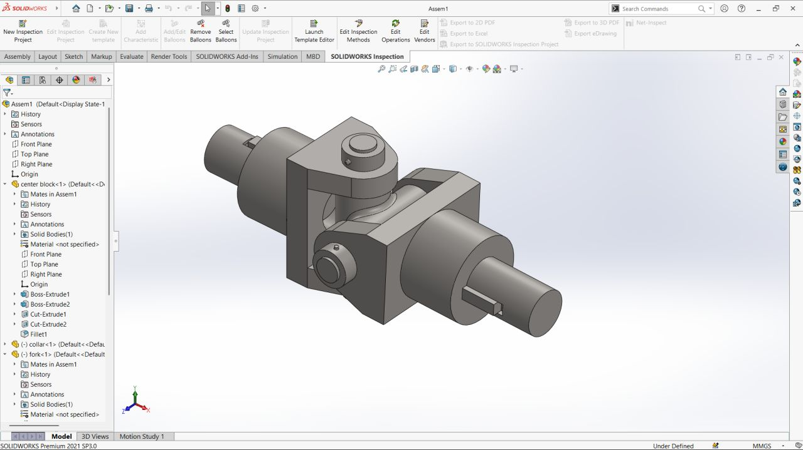
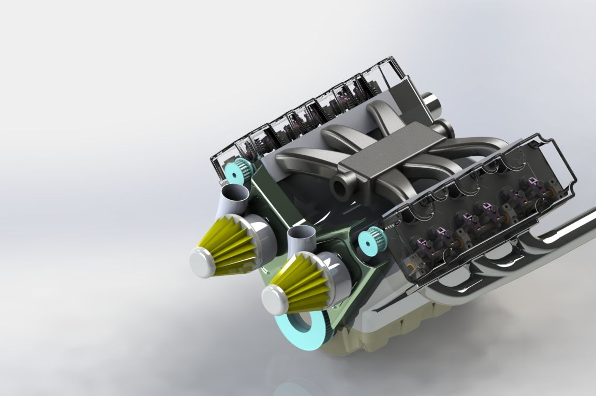
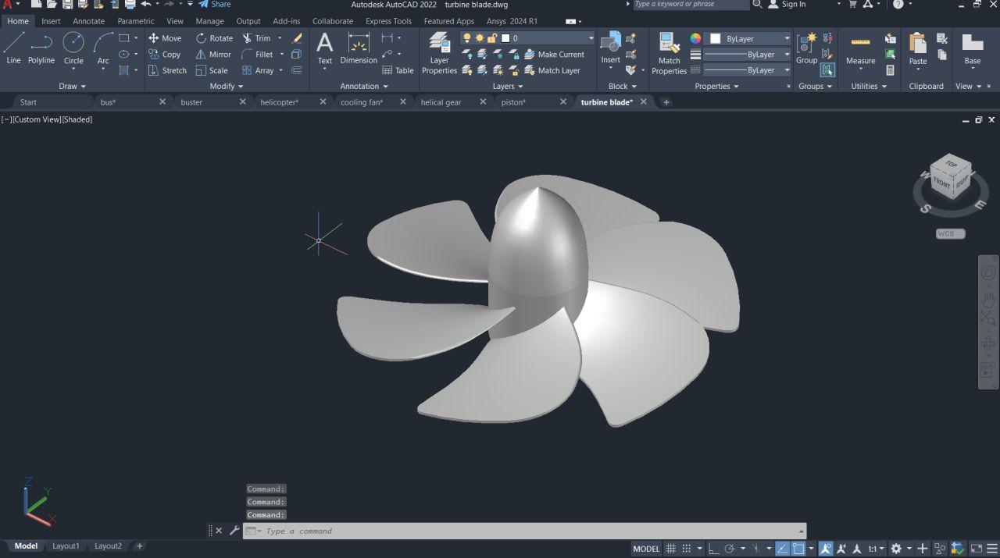
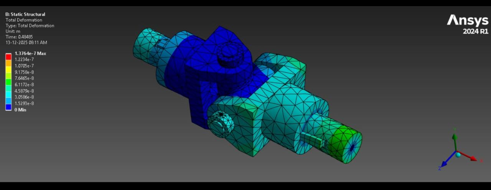
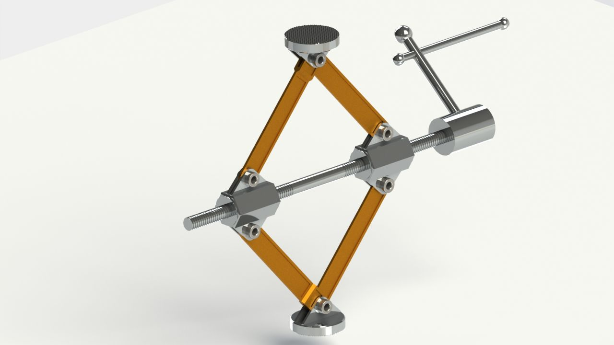

Motorcycle Helmet Concept
Helmet shell and visor concept modelled with attention to surface form, component detailing, and visual presentation.
MECHANICAL ENGINEERING · CAD DESIGN · PRODUCT DEVELOPMENT
Mechanical engineering graduate focused on 3D CAD, mechanical assemblies, and product concepts. I turn design requirements into practical models and clear technical documentation.
Explore my projects ↘
01 / ABOUT
I am Johnson Prem B, a Mechanical Engineer interested in developing functional, well-considered mechanical designs.
My project work spans product modelling, mechanical assemblies, 2D drafting, and introductory simulation workflows. I use CAD to explore form, understand component relationships, and communicate design intent through models and drawings.
I value accuracy, practical problem-solving, and a willingness to learn throughout the design process.
02 / SELECTED WORK
A selection of product concepts, assemblies, and engineering models.
Helmet shell and visor concept modelled with attention to surface form, component detailing, and visual presentation.

Flow trajectory visualization around a helmet model, exploring airflow patterns in a simulation setup.

Vehicle concept assembly with body, wheels, exterior features, and accessory details.

Component-level modelling and assembly of a compact mechanical mechanism with shafts and supporting features.

2D vehicle drafting with side, front, rear, and top views for communicating overall geometry.

Fan and housing concept featuring a bladed rotor, mounting frame, and cable detail.

Detailed engine assembly model showing major components, layout, and component relationships.

Blade geometry and hub modelled as a rotating component concept.

Finite element result visualization showing a total deformation contour on a mechanical assembly.

Mechanical lifting mechanism with linked arms, threaded screw, and support pads.
03 / CAPABILITIES
Part modelling, assemblies, and product concepts
2D drawings and orthographic views
Component relationships and mechanism concepts
Exposure to flow visualization and structural analysis
SOLIDWORKS, AutoCAD, Fusion 360
04 / EDUCATION
Latha Mathavan Engineering College
Core areas include mechanical design, thermal systems, manufacturing processes, materials science, and engineering mathematics.
05 / CONTACT
Open to mechanical design opportunities, collaborative projects, and conversations with engineering teams.